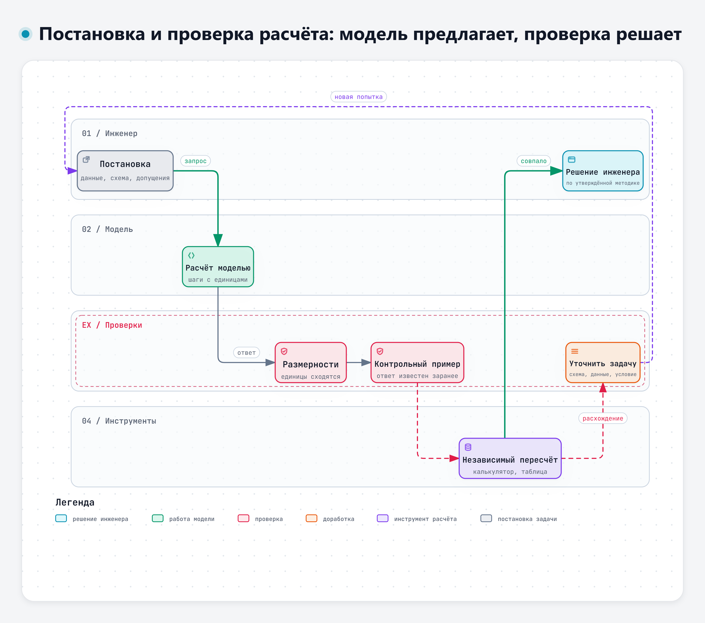
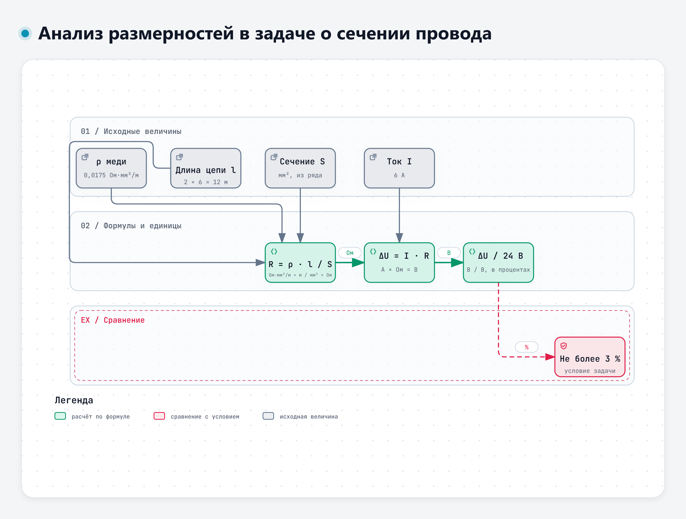

Тема 4.1. Инженерные расчёты с помощью ИИ
Модель хорошо объясняет формулу и плохо считает по ней. Модели поручаем объяснение методики, выбор расчётной схемы, составление перечня допущений и черновика формулы для таблицы; арифметику оставляем калькулятору, таблице или утверждённой расчётной программе, окончательное решение – инженеру.
Сквозной пример лекции – цепь фар дальнего света учебного узла ЭС-24: какое сечение провода нужно, чтобы падение напряжения не превысило заданного. Условие – в дополнении к учебному кейсу, раздел 1.
1. Что модель делает хорошо
Объясняет формулы и методики. Спросите модель, откуда берётся формула падения напряжения в проводе, и она толково расскажет: сопротивление провода пропорционально длине и обратно пропорционально сечению, R = ρ · l / S, а падение напряжения по закону Ома равно ΔU = I · R. Расскажет, что ρ зависит от материала и температуры, что для двухпроводной цепи длина l – это прямой и обратный провод вместе. Для инженера, который давно не открывал учебник по электротехнике, это быстрый способ вспомнить методику.
Помогает выбрать расчётную схему. Провод можно считать по одной длине или по двум, ток – постоянным или с пусковым броском, температуру – нормальной или рабочей. Хороший запрос заставляет модель перечислить варианты схемы и сказать, какие данные нужны для каждого. В нашей задаче это вопрос, как возвращается ток: по отдельному проводу к точке массы у блока или через раму. Для второго варианта нужно сопротивление рамы и контактов, которого в условии нет, и правильный ответ модели – спросить о нём, а не подставить ноль.
Перечисляет допущения и проверяет единицы. Модель может выписать все величины с единицами и проверить, сходятся ли они в формуле. Это полезно, но и это нужно проверять: о том, как модели обращаются с единицами, – в разделе 4.
Работа 2026 года сравнила два способа решать инженерные уравнения: модель сама выдаёт число или модель составляет уравнение, а численное решение выполняет классический метод Ньютона. Во втором случае средняя относительная ошибка снизилась на 67,9–81,8 % в зависимости от модели [8]. Авторы делают вывод, который хорошо описывает всю тему.
«These findings establish that contemporary LLMs excel at symbolic manipulation and domain knowledge retrieval but struggle with precision-critical iterative arithmetic, suggesting their optimal deployment as intelligent interfaces to classical numerical solvers rather than standalone computational engines.»
Перевод: «Эти результаты показывают, что современные языковые модели хорошо выполняют символьные преобразования и находят сведения по предметной области, но испытывают трудности с итерационными арифметическими вычислениями, требующими точности. Поэтому их лучше применять как умный интерфейс к классическим численным методам, а не как самостоятельное вычислительное средство». – Kodathala, Vunnam, 2026, препринт arXiv [8]
2. Почему модель ошибается в вычислениях
Модель составляет текст, а не выполняет арифметику так, как калькулятор. Число в ответе – тоже текст, и иногда оно правдоподобно, но неверно. Исследования последних лет показывают несколько закономерностей, которые прямо касаются инженерных расчётов.
Арифметика внутри задачи хуже, чем отдельно. Модели хорошо решают голый пример «36 × 6», но ошибаются чаще, когда то же действие встроено в текст задачи.
«Moreover, while models demonstrate high accuracy on standalone arithmetic tasks, their performance deteriorates substantially when computations are embedded within word problems.»
Перевод: «Кроме того, хотя модели показывают высокую точность на отдельных арифметических примерах, их результаты заметно ухудшаются, когда вычисления встроены в текстовые задачи». – Shrestha, Kim, Ross, 2025, препринт arXiv [1]
Инженерная задача – всегда текстовая задача: в ней есть условие, единицы, оговорки. Значит, к ней этот вывод относится напрямую.
Ошибки чаще в исполнении, чем в методе. В проверке 2025 года пять сильных систем решали 500 практических расчётных задач из финансов, физики, медицины и статистики. Верных ответов – от 45 до 63 % [2]. Разбор ошибок показал, что модели чаще выбирают правильный путь решения, но ошибаются на последнем шаге.
«[…] the majority of incorrect responses originated from calculation errors (33.4%) and precision or rounding issues (34.7%), indicating that even when models follow an appropriate reasoning path, they frequently fail in the final numerical execution or rounding stage.»
Перевод: «[…] большинство неверных ответов возникло из-за ошибок вычисления (33,4 %) и ошибок точности или округления (34,7 %). Это говорит о том, что даже когда модель идёт правильным путём рассуждения, она часто ошибается на последнем этапе – при выполнении вычисления или округлении». – Herambourg и соавт., 2025, препринт arXiv [2]
В той же работе на неверный выбор метода или формулы пришлось 13,4 % ошибок, на неверное допущение – 11,8 %, на неверную подстановку параметров – 4,7 % [2]. Эти цифры получены на одном наборе задач для одного поколения моделей; считать их постоянными нельзя. Важен вывод: правильный ход решения не гарантирует правильного числа.
Верный ответ бывает получен неверным путём. Такую ошибку не видно по итоговому числу.
«[…] all models exhibit errors in spatial reasoning, strategic planning, and arithmetic, sometimes producing correct answers through flawed logic.»
Перевод: «[…] все модели допускают ошибки в пространственных рассуждениях, планировании решения и арифметике, иногда получая правильный ответ с помощью ошибочной логики». – Boye, Moëll, 2025, препринт arXiv [3]
Отсюда правило: проверять нужно шаги, а не только ответ. Если ответ совпал с ожидаемым, это ещё не значит, что метод верен и сработает на других числах.
Инженерные задачи даются хуже общих. Работа 2026 года сравнила ответы моделей на общие математические задачи и на инженерные: расчёт напряжений, выбор сечения, оптимизация при противоречивых ограничениях. На инженерных задачах результаты стабильно ниже, а среди типичных сбоев названы многошаговые численные расчёты [4]. Работа по оценке решений из курса анализа электрических цепей проверяла ответы по пяти признакам, среди которых отдельно – арифметические ошибки и единицы измерения [14]. Это хорошая подсказка и для нас: арифметику и единицы проверяют отдельно от метода.
Подсказки в запросе помогают, но не спасают. Исследователи проверяли, справится ли модель с расчётами из фармакокинетики – там много экспонент. Пошаговое рассуждение и разбиение задачи на части снизили число ошибок, но не убрали их [5].
Модели различаются. В проверке 2026 года три модели считали дозировки лекарств по 90 стандартным задачам. Две модели, в том числе DeepSeek, решили все задачи верно, у третьей верных ответов было 83,3 %, а на сложных задачах – 53,3 % [7]. Это не повод доверять «лучшей» модели: на других задачах порядок может быть другим. Авторы делают вывод, который годится и для инженерного расчёта.
«All AI-assisted calculations should be independently verified by qualified clinicians, particularly for high-alert medications and complex dosing protocols, before clinical application.»
Перевод: «Все расчёты, выполненные с помощью ИИ, должны независимо проверяться квалифицированными врачами до применения в лечении, особенно для препаратов повышенного риска и сложных схем дозирования». – Farajalla и соавт., 2026 [7]
Замените «врачей» на «инженеров», а «препараты повышенного риска» – на расчёты, от которых зависит безопасность, и получите правило нашего курса.
3. Постановка расчётной задачи
В первый день мы составляли карточку задачи: исходные данные, ожидаемый результат, критерии приёмки, ограничения. Для расчёта карточка становится подробнее. Чем точнее поставлена задача, тем меньше модели приходится додумывать, а всё, что она додумывает, – возможная ошибка.
| Что указать | Пример для цепи фар |
|---|---|
| Исходные данные с единицами | I = 6 А; L = 6 м; ρ = 0,0175 Ом·мм²/м; сеть 24 В |
| Расчётная схема | Двухпроводная цепь, длина провода l = 2L; возврат через раму не рассматривается |
| Допущения | Ток постоянный и не зависит от напряжения; температура провода 20 °C; сопротивление контактов не учитывается |
| Диапазоны и граничные условия | Ряд сечений 0,75–4,0 мм²; допустимое падение не более 3 % от 24 В; предохранитель не больше допустимого тока провода |
| Формат результата | Таблица шагов: величина – формула – подстановка с единицами – результат с единицами; отдельной строкой – все допущения |
| Что делать, если данных не хватает | Перечислить недостающие данные и не подставлять значения от себя |
Две строки из этой таблицы особенно полезны.
Формат «подстановка с единицами». Когда модель пишет не «S = 0,0175 × 12 × 6 / 0,72», а «S = 0,0175 Ом·мм²/м × 12 м × 6 А / 0,72 В», ошибку в единицах видно сразу. Кроме того, такую строку легко пересчитать на калькуляторе.
Запрет додумывать. Строка «если данных не хватает, перечисли их» работает так же, как в первый день с пунктами ТЗ: модель реже подставляет придуманное значение. Но реже не значит никогда, поэтому каждое число в ответе сверяется с условием.

Интерактивная версия схемы – файл diagrams/d4-proverka-rascheta.html.
4. Расчётная схема и единицы измерения
Расчётная схема решает больше, чем арифметика. Ошибка в схеме даёт неверный ответ при безупречных вычислениях. В нашей задаче типичная ловушка – посчитать провод по длине 6 м, забыв обратный провод. Тогда минимальное сечение получается 0,875 мм², выбирают 1,0 мм², а на деле падение напряжения будет 5,25 % при допустимых 3 %. Модель, которой не сказали прямо, как устроена цепь, может выбрать любую из схем. Поэтому схему задаёт инженер, а от модели требуется назвать, какую схему она приняла.
Анализ размерностей – самая дешёвая проверка. Подставьте в формулу единицы вместо чисел и посмотрите, что получится:
- R = ρ · l / S: (Ом·мм²/м) × м / мм² = Ом. Сходится;
- ΔU = I · R: А × Ом = В. Сходится;
- S_min = ρ · l · I / ΔU: (Ом·мм²/м) × м × А / В = Ом·мм²·А / В = мм², потому что Ом × А = В. Сходится.
Если в ответе модели сопротивление цепи записано в «Ом/м», а сечение получилось в «мм²/А», значит, где-то перепутана формула или подстановка. Отдельная ловушка – смешение кратных единиц: ρ меди в Ом·м (около 1,7 · 10⁻⁸) с сечением в мм² даёт ошибку в миллион раз. Такая ошибка заметна по порядку величины: сечение провода фар не бывает ни микроскопическим, ни в квадратный метр.

Интерактивная версия схемы – файл diagrams/d4-razmernosti.html.
Модели обращаются с единицами по признакам, а не через пересчёт. Исследование 2026 года проверяло, как модели сравнивают величины с разными единицами, например 110 см и 1,2 м. Точность падает, когда значения близки, а сами ошибки систематические [13].
«The results suggest that LMs compare quantities through a bag of heuristics over numerals and units, rather than first converting both expressions to an exact shared-scale representation.»
Перевод: «Результаты показывают, что языковые модели сравнивают величины с помощью набора эвристик по числам и единицам, а не переводят сначала оба выражения в точное представление в одних единицах». – Sasaki и соавт., 2026, препринт arXiv [13]
Для инженера вывод простой. Если в задаче есть миллиамперы и амперы, сутки и часы, миллиметры и метры, попросите модель сначала перевести всё в одни единицы и показать этот перевод отдельной строкой. Затем проверьте перевод сами.
Справочное значение – тоже допущение. Удельное сопротивление отожжённой меди по международному стандарту при 20 °C – 0,017241 Ом·мм²/м, температурный коэффициент сопротивления – 0,00393 на градус [30]. В учебной задаче принято округлённое 0,0175. Это близко к стандартному значению: разница 1,5 %, что соответствует нагреву провода всего на 4 °C. Если провод в жгуте под капотом нагревается сильнее, удельное сопротивление растёт, и это нужно учитывать отдельно. Тот же справочник напоминает, чем таблица отличается от измерения.
«When accuracy is important, the electrical engineer does not consult the wire table, but makes actual measurements of samples of the copper used.»
Перевод: «Когда важна точность, инженер-электрик не обращается к таблице проводов, а измеряет образцы той меди, которая используется». – Copper wire tables, NBS Handbook 100, 1966 [30]
Для значения, которое модель «вспомнила», тоже нужно найти и открыть источник.
5. Контроль: как проверять расчёт модели
Проверка расчёта складывается из нескольких независимых приёмов. Каждый ловит свой вид ошибки, поэтому одного обычно мало.
Контрольный пример. Перед тем как доверить модели или формуле свою задачу, дайте им задачу с заранее известным ответом. Для нашей формулы годится пример, который считается в уме: ток 10 А, длина цепи 10 м, сечение 1 мм², ρ = 0,0175. Сопротивление – 0,175 Ом, падение – 1,75 В. Если формула или модель дают другое число, дальше можно не смотреть. Удачный контрольный пример у вас уже есть – это любая прошлая задача, решение которой проверено.
В разработке программ для того же служат тесты. В. Филатов на вебинаре по проверке кода, написанного с ИИ, привёл слова Э. Дейкстры: «Тестирование может показать наличие дефектов в программе, но не доказать их отсутствие» [36]. С контрольным примером так же: совпадение на одном примере не доказывает, что расчёт верен всегда, а расхождение сразу показывает ошибку.
Независимый пересчёт. Повторите расчёт другим способом и другим инструментом: калькулятором, в электронной таблице, в утверждённой расчётной программе вашей организации, вручную. «Независимый» – значит, не той же моделью и не в том же чате. Просьба «проверь себя» к модели – это не независимая проверка.
«In the context of reasoning, our research indicates that LLMs struggle to self-correct their responses without external feedback, and at times, their performance even degrades after self-correction.»
Перевод: «В задачах на рассуждение наше исследование показывает, что языковые модели с трудом исправляют свои ответы без внешней обратной связи, а иногда после самоисправления их результаты даже ухудшаются». – Huang и соавт., ICLR 2024 [11]
Обзор 2024 года пришёл к тому же выводу: модели хорошо исправляют собственные ошибки при наличии надёжной внешней обратной связи, например результата вычисления или проверки [12]. Для нас такой обратной связью служат калькулятор, таблица и контрольный пример.
Анализ размерностей – см. раздел 4. Он ловит ошибки в формуле и в подстановке единиц, но не ловит арифметику: 1,26 / 0,72 = 1,57 мм² по единицам выглядит безупречно.
Порядок величины и граничные случаи. Прикиньте ответ и проверьте его обратным умножением: 0,72 × 2 = 1,44 больше 1,26, значит, частное меньше 2; 0,72 × 1,7 = 1,224 меньше 1,26, значит, частное больше 1,7. Ответ 1,57 в эти границы не попадает: 0,72 × 1,57 ≈ 1,13, а не 1,26. Проверьте предельные случаи: если длину удвоить, падение напряжения должно удвоиться; если сечение увеличить, падение должно уменьшиться. Формула, которая ведёт себя иначе, неверна.
Сверка каждого числа с условием. Модель может подставить «похожее» значение из контекста. В нашем учебном ответе модель посчитала проценты от 28,2 В – это напряжение регулятора из п. 4.2 ТЗ (редакция 1), к задаче о проводах оно не относится. В условии сказано «3 % от 24 В». Такую ошибку не поймают ни размерности, ни порядок величины, только сверка.
Почему проверять каждый шаг. Ошибки в расчёте могут маскировать друг друга. В учебном ответе модели, который мы разберём на практике, арифметическая ошибка дала 1,57 мм², «почти» совпавшие с 1,5 мм², а подстановка 28,2 В вместо 24 В спрятала то, что 1,5 мм² условию не удовлетворяет. Ответ получился гладким и согласованным, хотя неверен в главном.
6. Пусть считает инструмент
Модель составляет выражение или пишет код; вычисления выполняет программа. Исследователи проверили эту идею ещё в 2022 году: тогда вышел препринт, а в 2023 году работа опубликована в материалах конференции ICML.
«While LLMs seem to be adept at this sort of step-by-step decomposition, LLMs often make logical and arithmetic mistakes in the solution part, even when the problem is decomposed correctly.»
Перевод: «Хотя языковые модели, похоже, хорошо разбивают задачу на шаги, при решении они часто допускают логические и арифметические ошибки, даже если разбиение выполнено правильно». – Gao и соавт., ICML 2023 [9]
Когда модель писала программу, а вычисление выполнял интерпретатор Python, точность на наборах математических задач была выше, чем у гораздо более крупных моделей, которые считали сами [9]. Близкий подход «программа вместо рассуждения» дал прирост в среднем около 12 % по сравнению с пошаговым рассуждением [10]. В медицине модели с доступом к специальным калькуляторам ошибались в 5,5 и 13 раз реже, чем без них [6].
Что это значит на практике:
- в некоторых чат-сервисах есть режим, в котором модель пишет и выполняет код. Есть ли он в сервисе, который разрешён вам, и как он называется, проверим на практике. Если модель показывает код и результат его выполнения, проверять нужно и код, и то, что он считает именно вашу задачу;
- если такого режима нет, тот же принцип вы реализуете сами: модель даёт формулу, вы считаете по ней в калькуляторе или в таблице;
- во многих организациях есть утверждённые расчётные программы и методики. Модель может помочь понять методику и подготовить исходные данные, но сам расчёт нужно выполнять по утверждённой методике в принятой программе.
А. Цымлов на вебинаре по разработке с ИИ сформулировал этот принцип одной строкой: «Вероятностный генератор + детерминированные проверки = надёжная система» [35]. Модель – вероятностный генератор: она предлагает. Калькулятор, таблица и контрольный пример – детерминированные проверки: они дают один и тот же результат при тех же данных. Близкую позицию высказал С. Скидан на отраслевом ИИ-митапе (ноябрь 2026): в его докладе утверждается, что языковая модель, регулярные выражения и правила работают лучше вместе, чем по отдельности [34].
7. Подсказка ИИ не заменяет утверждённый расчёт
Расчёт, на основании которого принимается решение о конструкции, оформляется по утверждённой в организации методике, выполняется в принятых инструментах и проверяется в установленном порядке. Ответ модели в этот порядок не встраивается сам по себе. Он может стать черновиком, подсказкой, вторым мнением или способом быстро найти ошибку в своём расчёте, но ответственность остаётся на инженере, который подписывает документ.
Опасность в том, что гладкий ответ с формулами и таблицей выглядит как готовый расчёт. Склонность принимать предложение автоматической системы без достаточной проверки называют предвзятостью автоматизации. Систематический обзор 40 исследований показал, что она проявляется не только при многозадачности, но и в отдельных задачах с высокой сложностью проверки [17].
Обзор 2025 года, посвящённый современным системам ИИ, приходит к выводу, что объяснения в ответе системы сами по себе предвзятость не снимают, а помогает активная самостоятельная проверка [18].
Есть и обратная сторона. К. Овчинников на отраслевом ИИ-митапе (ноябрь 2026) показал на слайде парадокс надзора: «Проверить агента может только тот, кто умеет сам. А новичок сразу попадает в роль эксперта: проверяет код за ИИ, не успев накопить свой опыт» [32]. Для расчётов это значит: проверить расчёт модели может тот, кто умеет считать сам. Поэтому методику и порядок величин инженер должен знать без модели.
8. Формулы для электронных таблиц
Если на рабочем месте есть табличный редактор (Excel, Р7-Офис, LibreOffice), модель может написать формулы для расчёта, который вы делаете регулярно. Проверенную формулу используют для повторных расчётов в пределах проверенных условий. Вычисления выполняет табличный редактор; правильность формулы, входных данных и ссылок на ячейки проверяет инженер.
Как просить формулу:
- Опишите расположение данных: в каком столбце какая величина, с какой строки начинаются данные, какие единицы.
- Укажите редактор и язык интерфейса: от этого зависят названия функций и разделитель аргументов. В русском интерфейсе Excel функция условия называется ЕСЛИ, а аргументы разделяются точкой с запятой [31]. В других редакторах проверьте по справке.
- Попросите формулу для каждой ячейки отдельно и пояснение, что она считает.
- Дайте контрольные значения или попросите модель предложить пример, который вы пересчитаете в уме.
Как проверять:
- введите контрольную строку и сравните результат с ожидаемым;
- измените одно исходное значение и посмотрите, меняется ли результат так, как должен (удвоили длину – удвоилось падение);
- проверьте ссылки на ячейки: формула, скопированная вниз, должна ссылаться на свою строку, а постоянные величины – на одну и ту же ячейку;
- проверьте граничные случаи: пустая ячейка, ноль, отрицательное значение.
Исследования формул, которые модели пишут для таблиц, дают знакомую картину. На простых задачах формулы верны, а когда сведений мало или задача сложна, точность падает [15].
«Our findings reveal that while LLMs exhibit proficiency in straightforward tasks, they often falter in complex, multi step operations, frequently producing plausible yet incorrect outputs.»
Перевод: «Наши результаты показывают, что языковые модели уверенно справляются с простыми задачами, но часто сбиваются на сложных многошаговых операциях и нередко выдают правдоподобные, но неверные результаты». – Thorne, 2025, препринт arXiv [16]
Готовая раскладка формул для задачи о проводе и контрольные значения – в дополнении к кейсу, раздел 3.
Что запомнить
- Модели – объяснение формул, выбор схемы, перечень допущений, черновик формулы. Арифметика и итог – калькулятору, таблице, утверждённой программе.
- Расчётную задачу ставят полностью: данные с единицами, схема, допущения, диапазоны, формат «подстановка с единицами», запрет додумывать.
- Проверка – контрольный пример, независимый пересчёт другим инструментом, анализ размерностей, порядок величины, сверка каждого числа с условием.
- «Проверь себя» той же модели – не проверка.
- Ответ модели не заменяет утверждённый инженерный расчёт. Подпись под расчётом ставит инженер.
Источники
Нумерация общая для всех материалов четвёртого дня.
Научные публикации
- [1] Shrestha S., Kim M., Ross K. W. Mathematical Reasoning in Large Language Models: Assessing Logical and Arithmetic Errors across Wide Numerical Ranges. 2025. Препринт arXiv. https://doi.org/10.48550/arXiv.2502.08680
- [2] Herambourg C., Siuda D., et al. The ORCA Benchmark: Evaluating Real-World Calculation Accuracy in Large Language Models. 2025. Препринт arXiv. https://doi.org/10.48550/arXiv.2511.02589
- [3] Boye J., Moëll B. Large Language Models and Mathematical Reasoning Failures. 2025. Препринт arXiv. https://doi.org/10.48550/arXiv.2502.11574
- [4] Mysior M., Iniotakis C. Evaluating large language models on text-based engineering design tasks: performance gaps and failure modes // Research in Engineering Design. 2026. https://doi.org/10.1007/s00163-026-00504-1
- [5] Shin E., Ramanathan M. Evaluation of prompt engineering strategies for pharmacokinetic data analysis with the ChatGPT large language model // Journal of Pharmacokinetics and Pharmacodynamics. 2024. Vol. 51, No. 2. P. 101–108. https://doi.org/10.1007/s10928-023-09892-6
- [6] Goodell A. J., Chu S. N., et al. Large language model agents can use tools to perform clinical calculations // npj Digital Medicine. 2025. Vol. 8. Art. 163. https://doi.org/10.1038/s41746-025-01475-8
- [7] Farajalla F., Rasras M., et al. Accuracy and hallucinations in AI-generated medication dosing calculations: a sequential explanatory mixed-methods evaluation // Scientific Reports. 2026. https://doi.org/10.1038/s41598-026-69321-9
- [8] Kodathala S. V., Vunnam R. Can Large Language Models Solve Engineering Equations? A Systematic Comparison of Direct Prediction and Solver-Assisted Approaches. 2026. Препринт arXiv. https://doi.org/10.48550/arXiv.2601.01774
- [9] Gao L., Madaan A., et al. PAL: Program-aided Language Models // Proceedings of the 40th International Conference on Machine Learning (ICML 2023). PMLR. 2023. Vol. 202. P. 10764–10799. https://proceedings.mlr.press/v202/gao23f.html (препринт arXiv 2022: https://doi.org/10.48550/arXiv.2211.10435)
- [10] Chen W., Ma X., et al. Program of Thoughts Prompting: Disentangling Computation from Reasoning for Numerical Reasoning Tasks // Transactions on Machine Learning Research. 2023. Препринт arXiv 2022: https://doi.org/10.48550/arXiv.2211.12588 (сведения о публикации в TMLR – на странице https://arxiv.org/abs/2211.12588)
- [11] Huang J., Chen X., et al. Large Language Models Cannot Self-Correct Reasoning Yet // International Conference on Learning Representations (ICLR 2024). 2024. P. 32808–32824. https://proceedings.iclr.cc/paper_files/paper/2024/hash/8b4add8b0aa8749d80a34ca5d941c355-Abstract-Conference.html (препринт arXiv 2023: https://doi.org/10.48550/arXiv.2310.01798)
- [12] Kamoi R., Zhang Y., et al. When Can LLMs Actually Correct Their Own Mistakes? A Critical Survey of Self-Correction of LLMs // Transactions of the Association for Computational Linguistics. 2024. Vol. 12. P. 1417–1440. https://doi.org/10.1162/tacl_a_00713
- [13] Sasaki M., Kamoda G., et al. Language Models Compare Quantities Using Number-specific and Unit-specific Heuristics. 2026. Препринт arXiv. https://doi.org/10.48550/arXiv.2606.03982
- [14] Chen L., Qin Z., et al. Benchmarking Large Language Models on Homework Assessment in Circuit Analysis // International Journal of Artificial Intelligence in Education. 2025. Vol. 35, No. 5. P. 3294–3355. https://doi.org/10.1007/s40593-025-00501-w
- [15] Thorne S. Experimenting with ChatGPT for Spreadsheet Formula Generation: Evidence of Risk in AI Generated Spreadsheets. 2023. Препринт arXiv. https://doi.org/10.48550/arXiv.2309.00095
- [16] Thorne S. Large Language Models for Spreadsheets: Benchmarking Progress and Evaluating Performance with FLARE. 2025. Препринт arXiv. https://doi.org/10.48550/arXiv.2506.17330
- [17] Lyell D., Coiera E. Automation bias and verification complexity: a systematic review // Journal of the American Medical Informatics Association. 2017. Vol. 24, No. 2. P. 423–431. https://doi.org/10.1093/jamia/ocw105
- [18] Romeo G., Conti D. Exploring automation bias in human–AI collaboration: a review and implications for explainable AI // AI & SOCIETY. 2025. https://doi.org/10.1007/s00146-025-02422-7
Нормативные и официальные документы
- [30] Copper wire tables. National Bureau of Standards Handbook 100. Washington, 1966. https://doi.org/10.6028/NBS.HB.100 (PDF: https://nvlpubs.nist.gov/nistpubs/Legacy/hb/nbshandbook100.pdf)
- [31] Справка Microsoft Excel. Функция ЕСЛИ. https://support.microsoft.com/ru-ru/office/функция-если-69aed7c9-4e8a-4755-a9bc-aa8bbff73be2
Выступления и вебинары
- [32] Овчинников К. «Инженер после AI». Доклад на ИИ-митапе ЦГУ, 06.11.2026 (презентация доклада).
- [34] Скидан С. «Как создать Агента-оператора». Доклад на ИИ-митапе ЦГУ, 06.11.2026 (презентация доклада).
- [35] Цымлов А. Доклад на вебинаре 3 по ИИ УЦ «МАСКОМ» и PVS-Studio, 28.08.2026 (слайды «slajdy-2026-08-28»).
- [36] Филатов В. «Искусственный автор, привычный контроль». Доклад на вебинаре 3 по ИИ УЦ «МАСКОМ» и PVS-Studio, 28.08.2026 (презентация доклада).
Учебные материалы
Учебный кейс ЭС-24 и дополнение к нему составлены для курса. Узел условный, значения подобраны для упражнений.
Полный список источников дня – в файле «Источники» в папке дня.
Автор курса
Виталий Пиков
- Архитектор информационной безопасности • РБПО • DevSecOps • AppSec
- Лектор и автор образовательных программ по ИБ и РБПО
Телефон: +7 (963) 782-92-78 · E-mail: vitaly@pikov.expert · Сайт: https://pikov.expert · Telegram: @UnderLineSecurity